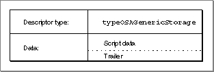
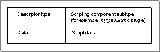

Legacy Document
Important: The information in this document is obsolete and should not be used for new development.
Important: The information in this document is obsolete and should not be used for new development.


Saving Script Data
After creating a new script (or after modifying a previously saved script), a user may want to save it.
Before saving script data, your application can use the
- IMPORTANT
- Your application should usually save scripts as script data rather than source data, so that it can reload and execute the data without compiling it.

OSAStorefunction to obtain a handle to the data. TheOSAStorefunction takes four input parameters: a component instance that identifies a connection with a scripting component, a script ID for the script data to be stored, a desired descriptor type for the descriptor record to be returned, and a parameter that contains mode flags for use by individual scripting components. It returns a descriptor record for the script data in the fifth parameter.The sections that follow describe the storage formats used by
OSAStoreand the resource and file types for script data.Storage Formats for Script Data
The descriptor record returned byOSAStorecan be either a generic storage descriptor record or a component-specific storage descriptor record:
Figure 10-1 illustrates the logical arrangement of a generic storage descriptor record. The descriptor type for a generic storage descriptor record is always
- A generic storage descriptor record is a special kind of descriptor record of type
typeOSAGenericStoragethat can be used to store script data created by any scripting component.- A component-specific storage descriptor record is a descriptor record whose descriptor type is the scripting component subtype value for the scripting component that created the script data.
typeOSAGenericStorage, and the data referred to by the descriptor record's handle is always followed by a trailer containing the subtype value for the scripting component that created the script data.Figure 10-1 A generic storage descriptor record

Figure 10-2 illustrates the logical arrangement of a component-specific storage descriptor record. The descriptor type for a component-specific storage descriptor record is the subtype value for the scripting component that created the script data, and the data referred to by the descriptor record's handle consists of the script data only, with no trailer.
Figure 10-2 A component-specific storage descriptor record

In most cases it is safest to request a handle to script data in the form of a generic storage descriptor record, regardless of the scripting component subtype you pass to the
OSAStorefunction.If the presence of the trailer in a generic storage descriptor record does not interfere with the script data, that data may be used for a wide variety of purposes. For example, if an application uses script IDs to refer to XCMDs, it can call
OSAStorewith a desired type oftypeOSAGenericStorage. The data for the resulting descriptor record consists of the XCMD data followed by a trailer indicating that the script data was created by a scripting component that executes XCMDs. Because the trailer does not interfere with the use of the data, the data may actually be used as an XCMD. Thus, an application can save XCMDs as script data and load and execute them after it has opened a connection with the generic scripting component.However, in some cases adding a trailer to script data may interfere with script execution. For example, suppose the data for a generic storage descriptor record consists of sound data. If a scripting component attempts to play the data from beginning to end as sound data, the trailer will interfere with the resulting sound. In this case, an application must open an explicit connection with a scripting component that can play sounds before saving the data, and then call
OSAStorewith a desired type that consists of the subtype for that scripting component.Resource and File Types for Script Data
When theOSAStorefunction returns a descriptor record of the specified type, your application can save the descriptor record's data as a resource of type'scpt'or write it to the data fork of a document.The generic scripting component subtype, the generic storage descriptor type, and the resource type for stored script data all have the same value, though they serve different purposes.
CONST kOSAGenericScriptingComponentSubtype = 'scpt'; kOSAScriptResourceType = kOSAGenericScriptingComponentSubtype; typeOSAGenericStorage = kOSAScriptResourceType;If you want to save script data as a compiled script file or as a script application, save it as a resource of type'scpt'. The Script Editor application uses resource ID 128, but you can use any valid resource ID. Save the script comment that accompanies the script data as resources of type'TEXT'and'styl'with resource ID 1128. (See Figure 7-1 on page 7-6 for an example of a script comment.) Each script file can contain only one script and one script comment. The file type for a compiled script file should be'osas'.A script application has the file type
'APPL'. If a script application has the creator signature'aplt', a user can initiate execution of the script it contains by opening it from the Finder. If a script application has the creator signature'dplt'and contains a user-defined handler for the Open Documents event, a user can initiate execution of the handler by dragging a document or folder icon over the script application's icon. For more information about the file formats used for script files, see "Script Editors and Script Files" on page 7-6.Script applications must include a
'SIZE'resource and two'CODE'resources with resource IDs 0 and 1. These resources should be identical to those in the sample script application files provided by Apple Computer, Inc. (except that you can change the size of the memory partition). The'CODE'resources contain bootstrap code that instantiates the script application component. The script application component, which is registered with the Component Manager at startup, provides the code that loads the script to be run and passes the resulting script ID to the appropriate component.When the user opens a script application from the Finder, the Finder sends the script application an Open Application event. If the scripting component that created the script supports
OSAExecuteEvent, the script application component passes the Open Application event and the script ID for the script toOSAExecuteEvent. If the scripting component doesn't supportOSAExecuteEvent, the script application component passes the script ID toOSAExecute.